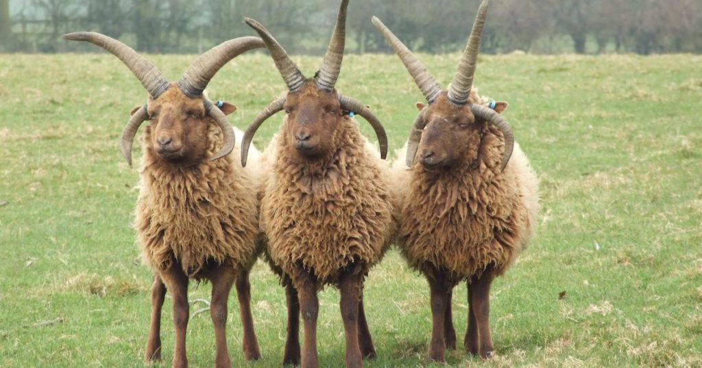

I haven't really done much on here in a while as far as blog posts or Quips go. The reason for that is
that when you have a website named with your full, real name, it's kinda hard to get away with a lotta stuff without
getting anyone mad at you, so, for the most part, I've decided this site is
going to be a portfolio, art-only type of deal. I'm not gonna be doing many more blog posts, im gonna just do art and stuff on here.
of course, blog posts are fun so I've kinda been more active on a different site that I'm running now.(lol I wont tell ya what it is)
aside from slowing down the blogs, I'm also kinda unhappy with how the site LOOKS and how I've set everything up, so depending on if
I'm lazy or not, you may see a massive re-design sometime in the future. If you talked to me at all during the development of this site,
you would know that I didnt actually write the CSS myself, and this is actually a free site template I downloaded. Very cringe.
So, yeah. If you wannna know the domain for the new site I'm running you're gonna need to reach out to me and you gotta know me personally,
as it's not exactly something I want tied to my name. I wanna keep it mostly anonymous. TL;DR
I'm gonna be keeping this site nice and politically correct while I post my funny stuff on a secret other site, and I might
redesign this site completely at some point.
